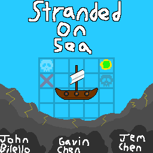
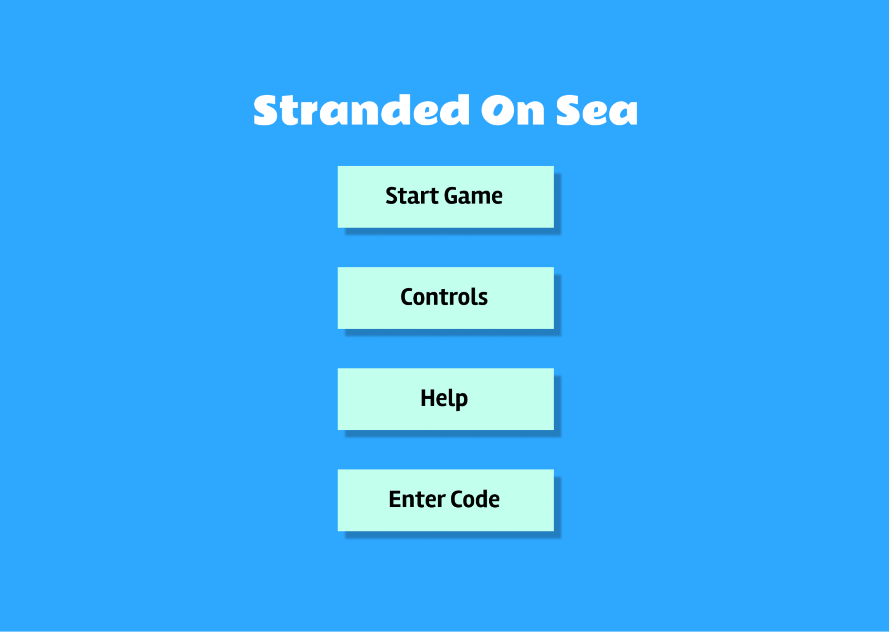
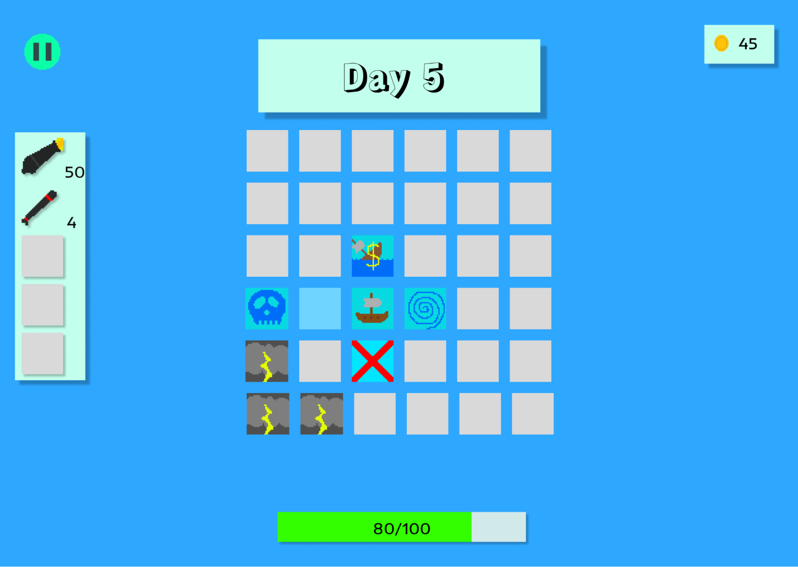
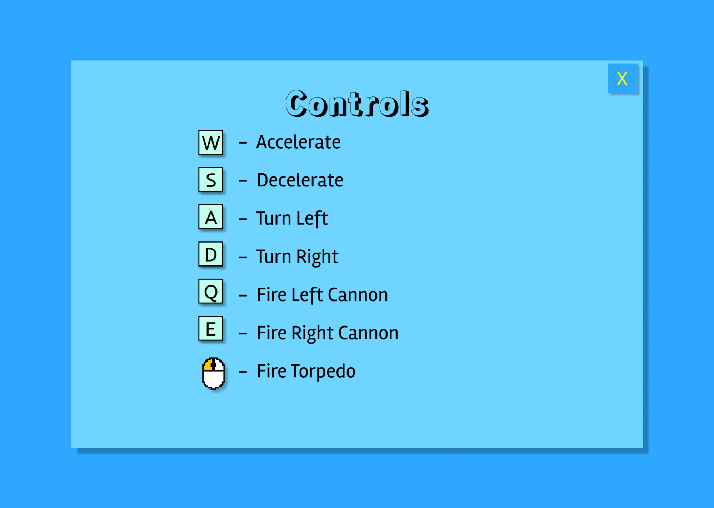
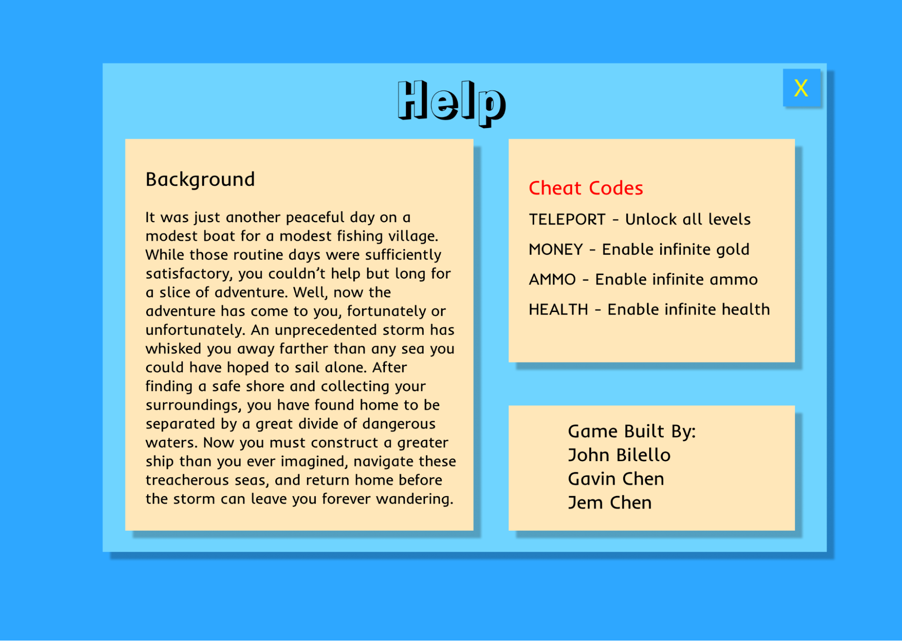
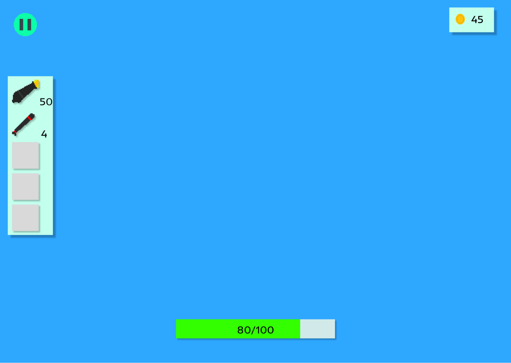

Stranded On Sea (SOS) Game Design Document
A Game For Wolfie2D
2024 John Bilello, Gavin Chen, Jem Chen
INTRODUCTION
Stranded On Sea is a top-down style 2D video game where the player is in control of a boat and has to navigate a map randomly generated from a set of events. The goal of this game is to make it to the objective point on the other side of the map while avoiding the storm that chases the player from behind. The difficulty of some events will increase as the game progresses, but the player will be able to upgrade and make customizations to the boat.
BACKGROUND STORY
It was just another peaceful day on a modest boat for a modest fishing village. While those routine days were sufficiently satisfactory, you couldn’t help but long for a slice of adventure. Well, now the adventure has come to you, fortunately or unfortunately. An unprecedented storm has whisked you away farther than any sea you could have hoped to sail alone. After finding a safe shore and collecting your surroundings, you find yourself separated from home by a great divide of dangerous waters. Now you must construct a greater ship than you ever imagined, navigate these treacherous seas, and return home before the storm leaves you forever wandering.
OBJECTIVE
The player’s goal will be to reach the home tile at the end of the map. At the start of the game, they will customize their ship with an initial budget. Then, they will move step by step towards the home tile by selecting adjacent tiles on the map to move towards, then completing the level associated with the tile. By completing levels, players can receive gold that they can spend at certain tiles to upgrade their ship. The player will lose if their ship is destroyed in combat. In addition, there will be a storm that will slowly cover the map, destroying the player’s ship upon contact.
GAMEPLAY
- The player has access to two methods of attack
- Cannons - There is a cannon mounted on each side of the player’s ship. These cannons will only fire towards either side of the ship, so aiming them requires the ship to be rotated. The ammunition required to fire the cannon can be found regularly as loot and is cheap to purchase.
- Torpedoes - The ship can fire guided torpedoes that will track to the player’s cursor in any direction. When it collides with an object, it will deal heavy damage to all entities in a small area. Torpedoes are difficult to find as loot and cost a hefty amount to purchase.
- To better model the experience of naval warfare, the damage calculations of this game has the following two aspects:
- When a ship takes damage, the total value is split into immediate damage and damage over time. This is designed to reflect how a ship slowly sinks as water fills it up. If the player exits a level, any remaining damage over time is removed on the assumption that emergency repairs were performed.
- When a projectile hits a ship, there is a chance for the attack to be ineffective. In that case, there will be a reduced immediate damage value and no damage over time. This chance is dependent on the material that makes up the hull of the ship
- The player will navigate the levels through a customizable ship. Through the course of the game, the player will earn gold that they can spend to customize their ship.
- Ship material
- The player can choose between wood, fiberglass, or metal.
- Wood: Cheapest to repair and weighs the least (affecting ship speed), but is least likely to deflect damage.
- Fiberglass: middle ground option
- Metal: Most expensive to repair, weighs the most, and most likely to deflect damage.
- Ship repair - a consumable that restores the ship to full health
- Bilge Pump - Decreases the damage over time that the ship will take from enemy attacks
- Crow’s Nest - Allows the player to see two tiles ahead on the map. The map will display icons for each available level to display the level type. Without the upgrade, the player will only see one tile ahead.
- Radar - An upgrade to Crow’s Nest that reveals the entire map
- The player can buy consumable cannon shots or torpedoes to fight enemies and destroy obstacles.
- Cannons - Fired from the left and right sides of a ship. They are cheap to purchase and do a normal amount of damage.
- Torpedoes - Fired at a location that the player clicks. They are significantly more expensive, but are easier to control and deal more damage.
- The player can choose one form of propulsion for their boat
- Row/Oar - Easy handling, but does not provide much acceleration or top speed
- Sail - Faster, but harder to handle
- Motor - Fast and easy to handle
Game Map and Levels
The player will need to traverse across a randomly generated map in order to approach the objective point. This map will be sectioned off into event nodes of the following types:
- Whirlpool- This scene will contain a destructible obstacle that will prevent the player from leaving. In the meantime, a growing whirlpool will threaten to pull in the player and damage them. In addition, the player has the choice to pursue optional loot that is located behind another obstacle
- Salvage - The scene will contain the remnants of a shipwreck. There will be no people to rescue, since people don’t exist in this world, but there will be leftover loot to collect and repurpose. Collect as much floating loot as possible before it sinks.
- Battle - This scene will contain a group of hostile ships each randomly placed around the map. The player may choose to defeat all the hostiles and collect their resources or wait for fog to settle in to evade them.
- Common - This scene is the most random one and can contain elements of all the other events with the exception of the Land scene. This means there can be some hostile ships, a small blockade, or some floating loot. In addition, this scene can also have neutral ships, which can be defeated for resources, but may turn other neutral ships hostile in the future.
- Land - The player will start on this scene and return to this scene by entering the corresponding node on the map. Here, the player can buy upgrades, repair their ship, restock on ammo, or pay bribes to restore their reputation with neutrals.
CONTROLS
- W - Accelerate
- S - Decelerate
- A - Turn left
- D - Turn right
- Q/E - Fire cannon
- Click - Fire torpedo
USER INTERFACE
Splash Screen

Main Menu

Level Selection Screen (Game Map)

Controls Screen

Help Screen

In-Game Screen

ARTWORK
All icons and sprites will be original and drawn using piskel or similar online tools. Tilemaps will be created using Tiled.
- Ships will have different sprites depending upon ship material and propulsion type selected by the player.
- Other sprites to draw include the whirlpool, enemy ships, obstacles, and treasure
- Tiles to draw include sand, grass, rock, and water.
- Player and enemy ships will have idle, moving, taking damage, death, and firing animations
SOUNDS
All sounds will be original and created using Audacity and/or Chiptone. Sound effects will include:
- Cannon shot
- Cannon collision
- Torpedo shot
- Torpedo explosion
- Shop purchase